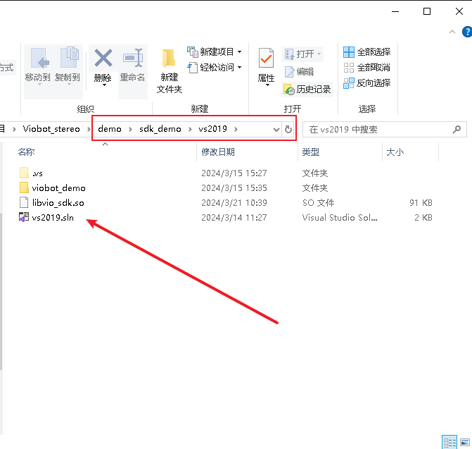
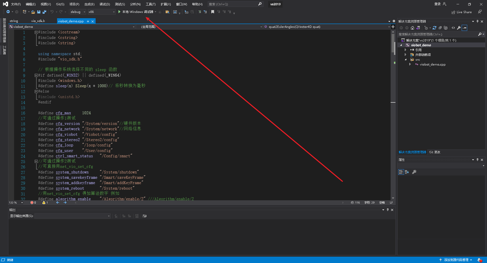
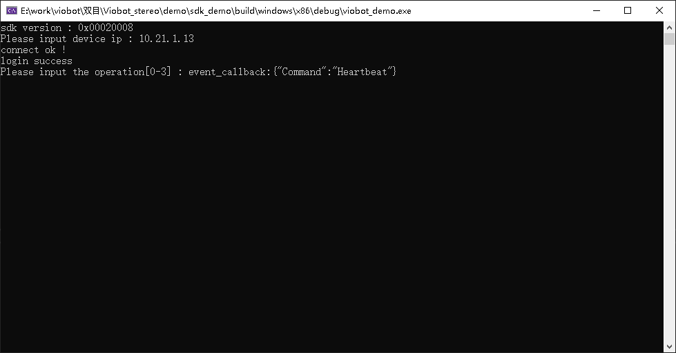
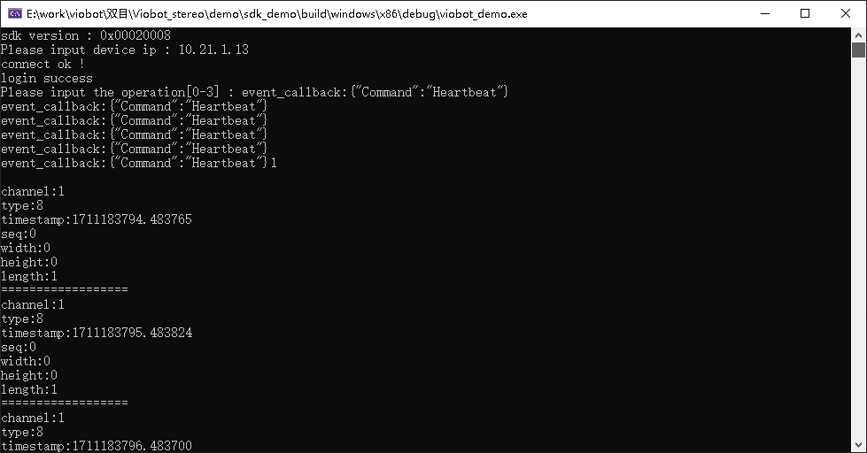
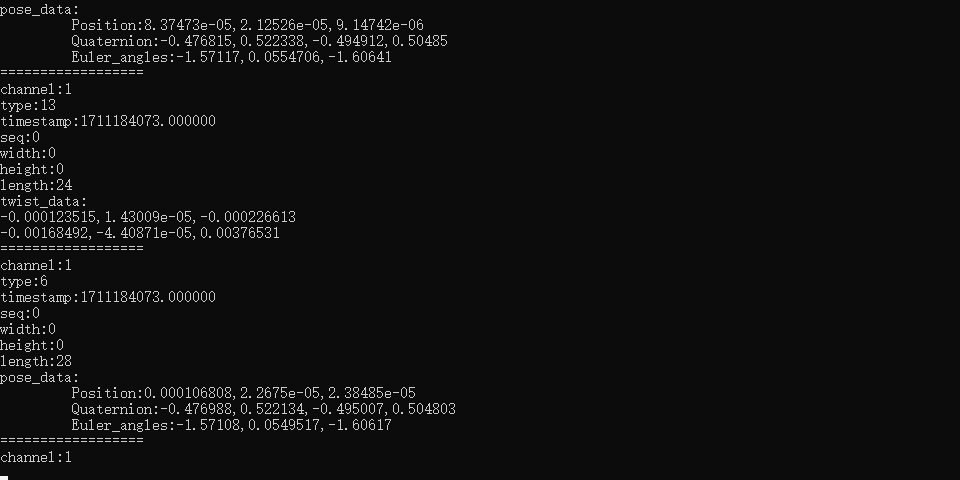
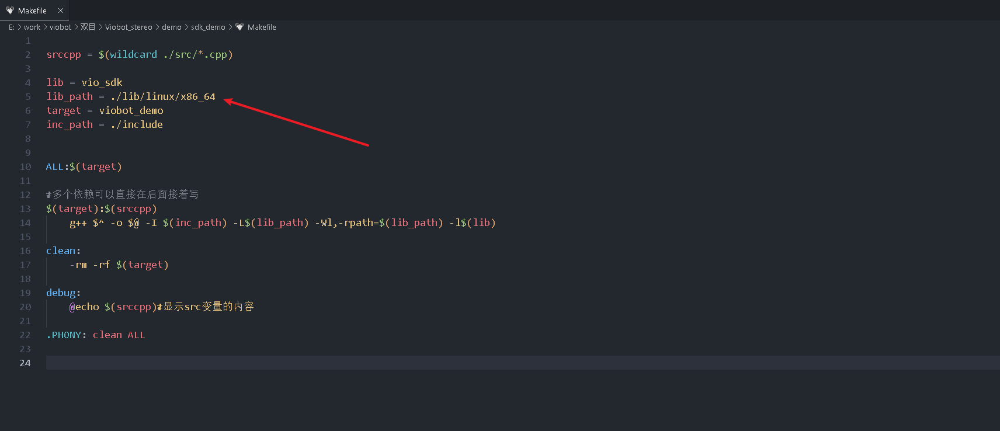
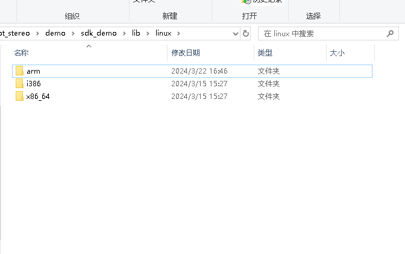
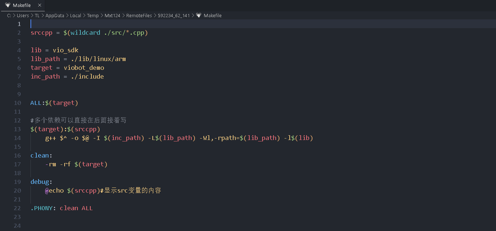
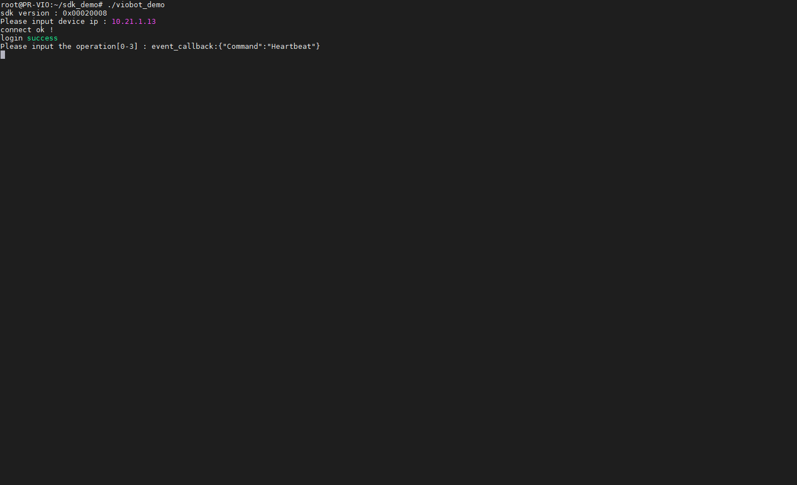
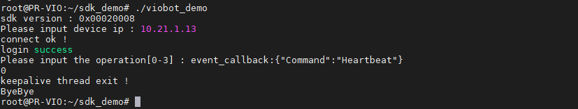

HTTP Demo
简单说明一下SDK的http使用，给出一个基础的例程。
地址：Hessian-matrix/SDK_Demo: http demo (github.com)或SDK_Demo: http demo (gitee.com)
1.wimdows下使用
直接使用vs2019打开，直接本地调试器启动就行。


（1）输入设备IP按回车就能连接上。
会打印event_callback，表示设备心跳正常。

（2）输入1按回车，开启流通道1的接收。
通道1的数据就能就收到了，默认会接收到类型8的数据，也就是当前的系统状态，该消息是1秒上传1次。

（3）输入2按回车，启动/停止stereo2算法
当系统状态是ready时，启动算法，终端会持续打印通道1的pose和twist数据；当系统状态是stereo2_running时，停止算法，不会再接收到pose和twist数据，也就没有了打印这两个数据。

（4）输入0按回车，退出登录并停止程序
2.linux下使用
（1）修改makefile里面的lib_path

lib/linux路径下的对应的so路径对应不同的平台

以viobot本机为例：
改为：lib_path = ./lib/linux/arm

（2）编译运行
cd sdk_demo
make
./viobot_demo

1.输入设备IP按回车就能连接上。
会打印event_callback，表示设备心跳正常。
2.输入1按回车，开启流通道1的接收。
通道1的数据就能就收到了，默认会接收到类型8的数据，也就是当前的系统状态，该消息是1秒上传1次。
3.输入2按回车，启动/停止stereo2算法
当系统状态是ready时，启动算法，终端会持续打印通道1的pose和twist数据；当系统状态是stereo2_running时，停止算法，不会再接收到pose和twist数据，也就没有了打印这两个数据。
4.输入0按回车，退出登录并停止程序
